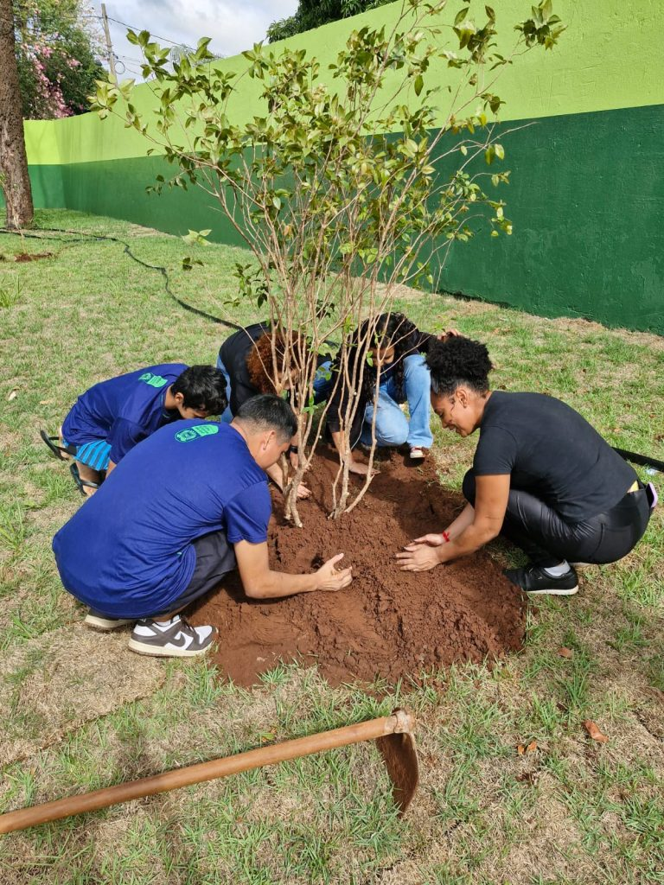

Conectando Vidas entre o Rural e o Urbano
A agroecologia é um modo de produzir alimentos que respeita a natureza, valoriza o saber dos agricultores e promove o equilíbrio entre o ser humano e o meio ambiente. Em vez de usar agrotóxicos e fertilizantes químicos, a agroecologia aposta em práticas naturais, como a rotação de culturas, o uso de compostagem e o cultivo de diversas espécies no mesmo espaço. É uma forma de cuidar da terra sem prejudicar as gerações futuras.
A agricultura familiar é responsável por boa parte dos alimentos que chegam à nossa mesa, como arroz, feijão, frutas, legumes e hortaliças. Esses agricultores cultivam em pequenas propriedades, muitas vezes com a ajuda da própria família, e são essenciais para a segurança alimentar do país. Além disso, eles mantêm tradições locais, cuidam da biodiversidade e geram empregos no campo.
Educar sobre agroecologia e agricultura familiar significa ensinar desde cedo, nas escolas e nas comunidades, o valor dos alimentos que comemos, de onde eles vêm e como são produzidos. É mostrar que nossas escolhas diárias — como preferir produtos locais e da agricultura sustentável — fazem diferença para o planeta e para os agricultores.
Todos nós temos um papel nessa conexão entre campo e cidade:
A agroecologia e a agricultura familiar são caminhos para uma alimentação mais saudável e para um mundo mais equilibrado. Quando entendemos a importância disso tudo e nos tornamos consumidores mais conscientes, ajudamos a construir uma sociedade que valoriza a vida, o trabalho do agricultor e a preservação da natureza.